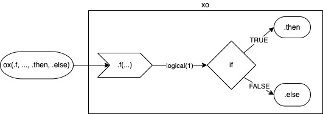
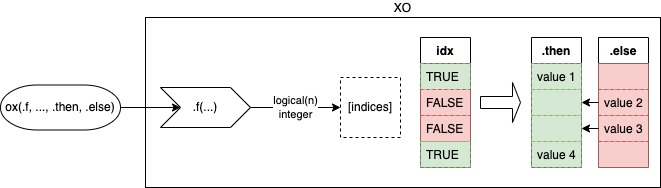

Name
Symbolically, letter “O” and letter “X” represents opposite characteristics. Usually, “O” is associated with acceptance while “X” symbolizes rejection. This summarizes the meaning of the ox which manages switching two values based on the TRUE/FALSE condition.
Motivation
Reason to create this package is to simplify the code to check and replace the object if it does not satisfy given assumptions. Following code illustrates typical situation when x is checked (possibly against y) to return x or y.
# basic syntax
if (is.fun(x)) x else y
if (fun(x, y, ...)) x else yox package offers a different syntax for above base R calls, where x and y can be used once in the call to produce the same output.
ox syntax
ox has four arguments:
-
.fa function which returns a single logical value. -
...named or unnamed arguments to be passed to.f(...)to evaluate. -
.thenis a positive-replacement, returned when.freturnsTRUE. By default, it’s the first argument from.... -
.elselseis a negative-replacement, returned when.freturnsFALSE. By default, it’s the last argument from....

Consider simple where x checked if it’s a character. If condition is TRUE ox returns x (.then) otherwise .else. Since .then has not been specified directly object = x is considered as a default value to return when .f returns TRUE. In this example x is a argument of .f and is returned as .then in the same time.
x <- "a"
y <- "b"
ox(.f = is, object = x, class2 = "character", .else = "b")
# [1] "a"Another example illustrates the comparison between two values and return one matching the condition. In this case y is greater than x so it’s returned. Both x and y are used in the function and returned as .then and .else in the same time.
x <- 1
y <- 2
ox(`>`, x, y)
# [1] 2pipe operators
Syntax is also optimized to use pipe operators. For magrittr::%>% it’s very convenient as one can use .. With |> one needs to specify .f = <fun> and x will go to the ox as first argument.
vectorized OX

ox version for switching vector values instead of switching single-objects one can use OX. OX replaces values of the .then with values of .else when condition is FALSE. .else should be a atomic or a list. Function .f in OX can return logical vector or integer which determines indices of .then to be kept or replaced.
1. Replacing values of .then with single value
When .else is a vector, the values of .then are replaced by the values of .else on the same indices - .then[!idx] <- .else[!idx]
When .else is a single value, the values of .then are replaced by this value - .then[!idx] <- .else
When .else is NULL, the values of .then are dropped from the object - .then <- .then[idx]